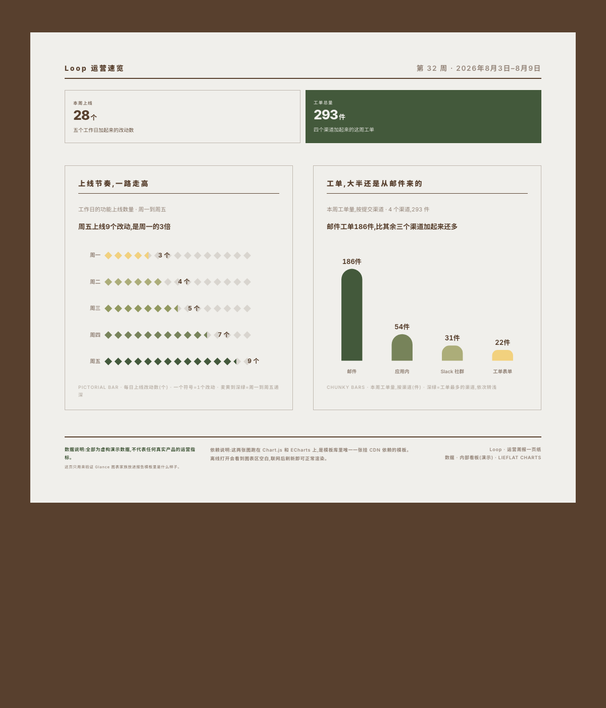

調查報告 / 研究一頁 · 青瓷側欄
Survey One-Pager · Porcelain Rail
主欄放結論，側欄走方法與樣本軌道。
每個範本是一整頁可發布的報告骨架，不是單張圖。複製對應語言的 HTML，替換資料、標題和來源即可。頁內圖表仍須從 catalog.md 選擇真實圖型；縮圖僅展示版型和資訊密度。
先按報告型別、內容結構和閱讀任務篩，再看版心和密度。調查 / 研究看 R01、R07、R08、R11；業務資料 / 財務經營看 R04、R09、R12；年度 / 長週期回顧看 R02、R03、R06；產品、專案和個人資料記錄看 R05、R10。範本名稱只是版型線索，不是產業限制。
| 760 | 窄欄敘事 |
| 880 | 中張單點陣圖 |
| 980 | 常規報告 |
| 1080 | 寬版海報 / 儀表板 |
| 600×1000 | 定尺社群媒體卡 |
主欄放結論，側欄走方法與樣本軌道。

巨號數字和多張圖穿插成雜誌拼貼。

一句大字配一片可數的單位點陣。

600×1000 定尺，不滾動，適合單張分享。

按日折線、底部大數和榜單。

多模組一頁總覽，右欄配 KPI。

區間、排序和指標在一頁內快速掃讀。

里程碑、趨勢譜系和年度大數。

書脊大標題、同構小圖和時刻分佈。

窄欄主線敘事，關鍵詞用反色強調。

長週期、多維度、複雜證據的整頁回顧。

故事段落、小圖和行程表交替向下。